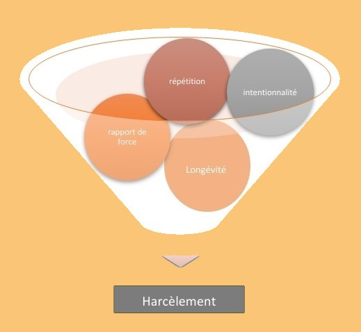

Le harcèlement scolaire se définit par une répétition de comportements agressifs ou intimidant entre 2 (ou plusieurs) élèves. Nous constatons, entre eux, une disparité de force, de pouvoir ou de statut social. Ces comportements intentionnels s’inscrivent dans le temps et visent à blesser, intimider, humilier ou isoler la victime. Afin d’identifier une situation de harcèlement, ces 4 points doivent être réunis :
Ceci nous permet donc de comprendre ce que n'est pas le harcèlement Disputes, moqueries, insultes avec réciprocité entre 2 (ou plusieurs jeunes) de force égale.